비밸브재건술
숨 쉴 때 코가 주저앉는다면
비밸브를 확인하세요
코 안에서 가장 좁은 통로가 비밸브입니다.
이곳이 좁으면 어떤 치료로도 코막힘이 남습니다.
비밸브 협착 증상
가장 좁은 통로를 넓혀야
비로소 숨이 트입니다
- ?
숨을 들이쉴 때 콧구멍이 오므라들어요.
- ?
코를 벌려야 숨이 편해져요.
- ?
수술을 받았는데도 숨길이 좁아요.
- ?
운동할 때 유독 숨이 차요.
- ?
자는 동안 입이 자꾸 마릅니다.
NASAL VALVE
왜 수술했는데도
답답함이 남을까요?
비중격과 비염을 해결해도 비밸브가 좁으면 코막힘이 남습니다.
숨을 들이쉴 때 콧망울이 안으로 빨려 들어간다면 확인이 필요합니다.
코 수술 후에도 코막힘이 남은 환자 612명 분석
5명 중 2명, 비밸브 협착 확인
* 출처: 비폐색 재수술 환자의 원인 분석 국내 자료(2021)
- 선천적 협착
태어날 때부터 비밸브 각도가 좁은 경우
- 연골 약화
나이나 외상으로 지지 연골이 약해진 경우
- 이전 수술 영향
과도한 절제로 지지 구조가 줄어든 경우
비밸브재건술이란?
노원점 원장님이 설명하는 비밸브의 구조와 재건 방법,
영상으로 확인해 보세요.
비밸브 협착,
그냥 두면 어떻게 될까요?
가장 좁은 곳이 막혀 있으면 다른 치료 효과도 함께 떨어집니다.
- 01
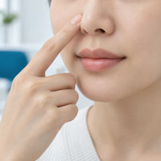
코막힘 지속
다른 치료를 해도 답답함이 그대로 남습니다.
- 02
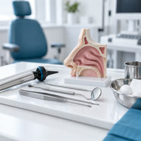
구강호흡
코로 숨쉬기 어려워 입으로 숨 쉬게 됩니다.
- 03
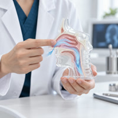
수면 질 저하
누우면 더 좁아져 자는 동안 숨이 얕아집니다.
- 04
운동 시 숨참
운동할 때 숨이 빨리 차고 회복이 느려집니다.
비밸브,
약으로 넓힐 수 있을까요?
비밸브는 연골과 근육이 만드는 구조입니다. 약이나 스프레이로는 넓어지지 않으며, 지지 구조를 보강해 주어야 합니다.
- 01
보조 기구
코 확장 밴드나 스텐트는 착용 중에만 효과가 있습니다.
- 02
연골 이식 보강
자가 연골로 지지대를 만들어 통로를 넓힙니다.
- 03
동반 교정
비중격·하비갑개를 함께 다듬어 효과를 높입니다.
지지 구조를 살리는
숨길 비밸브 재건
넓히기만 하면 다시 주저앉습니다.
버텨 주는 구조를 만들어야 오래갑니다.
- 01
자가 연골 사용
비중격이나 귀 연골로 몸에 맞는 지지대를 만듭니다.
- 02
각도 설계
숨 쉴 때 좁아지지 않는 각도로 설계합니다.
- 03
모양 고려
기능을 살리면서 콧대와 콧망울의 인상도 함께 봅니다.
일반적인 수술 방식
- 좁은 부위를 넓히는 데 집중하는 수술
- 지지 구조가 약하면 시간이 지나 다시 좁아질 수 있음
- 연골 확보 방법에 따라 결과 차이가 있음
- 기능 개선 위주로 진행
- 재수술 시 사용할 연골이 부족할 수 있음
숨길이비인후과 비밸브재건술
- 지지 설계
숨 쉴 때 주저앉지 않는 각도로 설계 - 자가 연골
몸에 맞는 연골로 거부 반응 최소화 - 연골 보존
다음을 위해 남길 연골까지 계획 - 기능+인상
숨길과 인상을 함께 고려 - 전문성
재수술 경험이 많은 의료진
ONE-STEP
숨길 ONE STEP 비밸브재건술
검사부터 수술까지 하루에.
가장 좁은 곳부터 확실하게 넓힙니다.
STEP 01
비밸브 각도 측정
숨을 들이쉴 때 통로가 얼마나 좁아지는지 측정합니다.
STEP 02
연골 계획
어느 부위 연골을 얼마나 쓸지 미리 계획합니다.
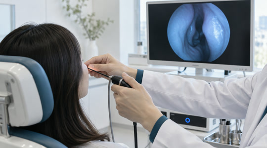
STEP 03
재건 수술 진행
지지대를 만들어 통로를 넓히고 고정합니다.
STEP 04
회복 및 당일 퇴원
상태 확인 후 귀가하며 경과를 정기적으로 확인합니다.
수술 방법
비밸브 재건 과정
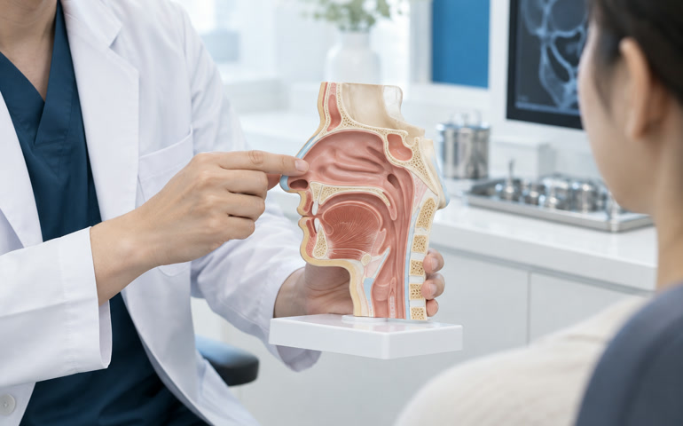
STEP 01
협착 부위 확인
내시경과 촉진으로 좁아지는 지점을 찾습니다.
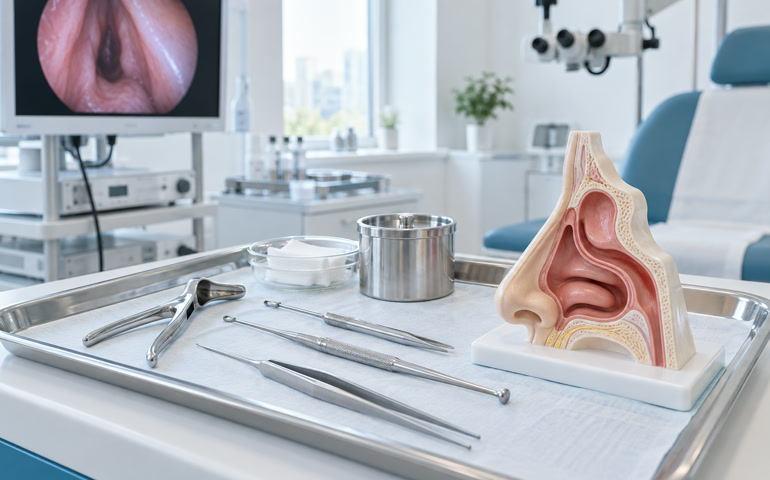
STEP 02
지지대 제작
자가 연골을 다듬어 지지대를 만듭니다.
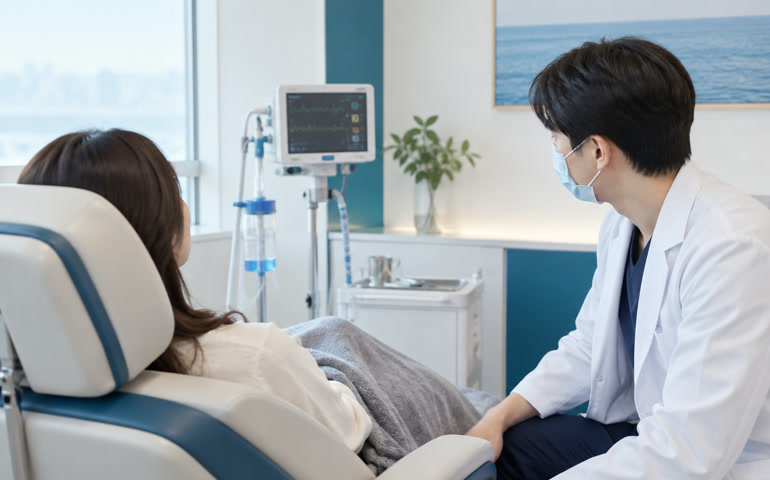
STEP 03
고정과 확인
제자리에 고정하고 숨길이 넓어졌는지 확인합니다.
CT로 보는 비밸브재건술 수술 전후사진
수술 전후 3D-CT와 내시경 자료를 통해
구조의 변화를 객관적으로 확인합니다.
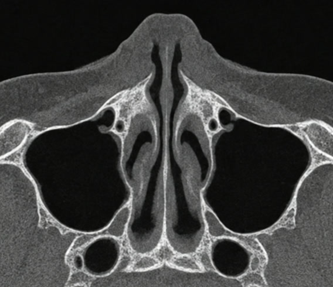
수술 전 CT (위)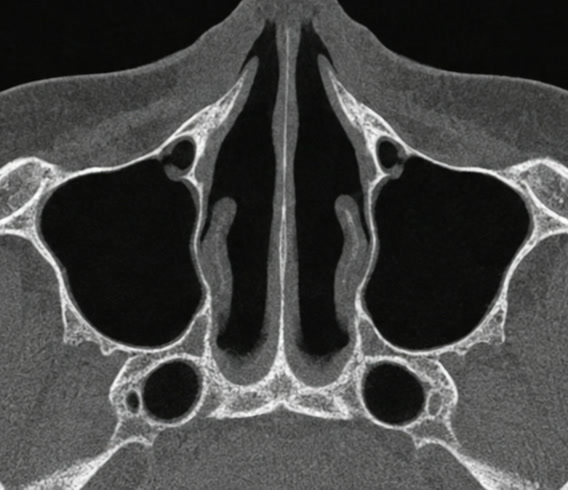
수술 후 CT (위)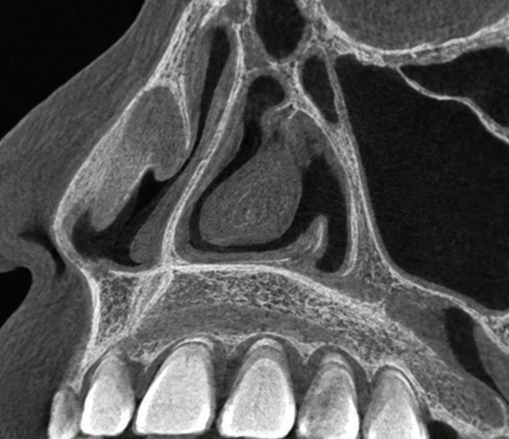
수술 전 CT (45도)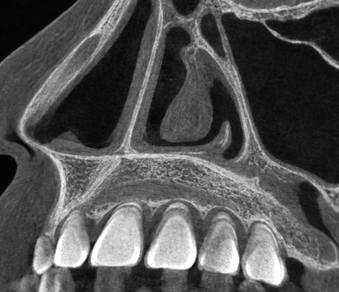
수술 후 CT (45도)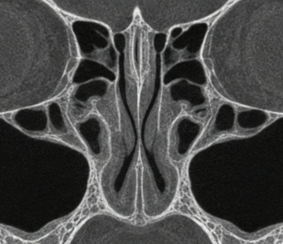
수술 전 CT (정면)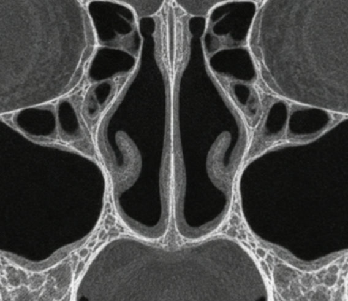
수술 후 CT (정면)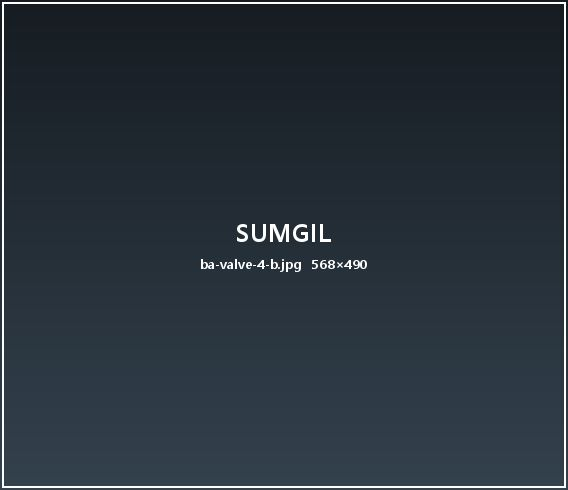
수술 전 내시경숨길이비인후과가 소개된 곳
- KBS 생로병사
- MBC 기분좋은날
- SBS 모닝와이드
- 조선일보 헬스
- 중앙일보 건강
- 연합뉴스
숨길이비인후과 YOUTUBE
숨길 비밸브 영상
숨길이비인후과 비밸브재건술 FAQ
-
숨을 세게 들이쉴 때 콧망울이 안으로 빨려 들어가면 의심합니다. 내시경과 촉진으로 확인합니다.
-
비중격 연골을 우선 사용하고, 부족하면 귀 연골이나 늑연골을 고려합니다.
-
콧망울이 살짝 또렷해지는 정도이며, 원하시는 방향을 미리 상담해 반영합니다.
-
기능적 코막힘이 확인되면 일부 적용될 수 있습니다. 검사 결과에 따라 안내해 드립니다.
-
겉 붓기는 1~2주, 코 안 붓기는 3~4주에 걸쳐 가라앉습니다.
비밸브재건술 수술 후 주의사항
- 수술 후 2주 동안 안경 착용을 피해 주세요.
- 코를 누르거나 비비지 말아 주세요.
- 한 달 동안 격한 운동과 사우나는 피해 주세요.
- 옆으로 누워 자는 자세는 2주 정도 피해 주세요.
- 처방약은 끝까지 복용해 주세요.
- 붓기가 갑자기 심해지면 바로 연락 주세요.
혹시 나도? 코 건강 1분 자가진단
코막힘·비염·수면 습관을 묻는 열 문항으로 지금 상태를 먼저 확인해 보세요.
2009년부터 이어온 선택
비밸브재건술 환자분들의 이야기
강남점 · 김ㅇ지 · 2026.08.18
수술하고 두 달쯤 지났는데 아침에 일어날 때 코가 막혀 있지 않아요. 잠을 깊게 자니 하루가 달라졌습니다.
노원점 · 한ㅇ래 · 2026.07.29
상담 때 CT를 같이 보면서 왜 막히는지 설명해 주신 게 좋았어요. 결정하기 전에 충분히 이해했습니다.
송도점 · 정ㅇ현 · 2026.07.15
회복이 생각보다 빨랐습니다. 다음 날 바로 퇴원했고 일주일 뒤부터는 일상생활에 지장이 없었어요.
일산점 · 오ㅇ빈 · 2026.06.30
숨 쉬는 게 편해지니 운동할 때가 제일 체감됩니다. 진작 할 걸 그랬어요.